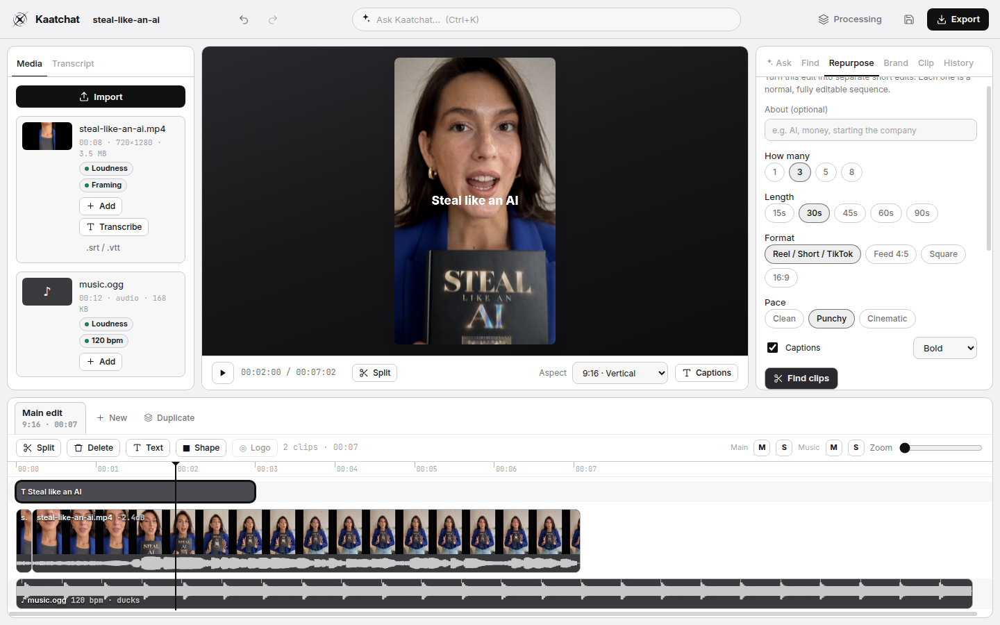

Talk to your footage
Shoot once.
Edit intelligently.
Create more.

Ask
Ask for the edit.
Plan
Every AI edit is a plan you can read before it runs.

Repurpose
One video, many pieces.
Reel 1
Reel 2
Reel 3
Local means local.
Video and audio filesStay on your machine
Projects, timelines, transcriptsStay on your machine
Accounts, tracking, telemetryNone
Kaatchat
Free · MPL-2.0 open source · No account · No uploads
kaatchat-website.vercel.app
from